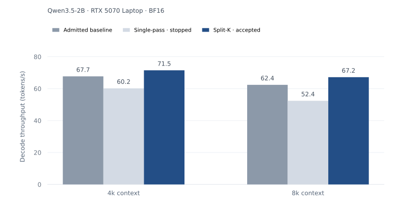
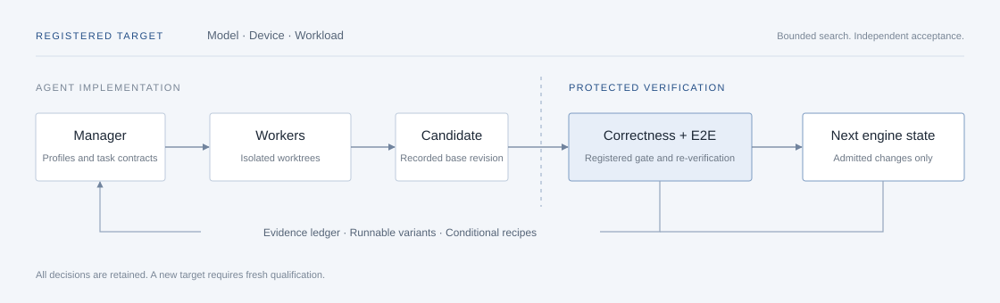
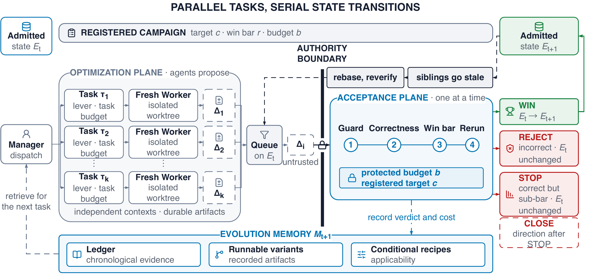

When should an optimization become part of the engine?
Writing a candidate is only one part of agent-driven inference optimization. In EngineTailor's experiments, a faithful fusion could be rejected by a naive output comparison, two candidates with the same correctness verdict had opposite performance outcomes, and a useful mechanism lost much of its benefit after a target change. These observations motivate a complete target engine with independent acceptance and records that preserve the conditions behind each result.
01A verifier can reject a faithful implementation
Exact agreement between generated continuations sounds like a strict correctness test. It can also ask the wrong question. A small numerical difference may change one token, after which the two model executions condition on different histories.
The manuscript reports this failure mode for a faithful fused RMSNorm path. One last-bit argmax divergence reduced later free-running trajectory identity to roughly 14%, even though the local implementation was otherwise faithful. That value describes agreement between the diverging trajectories; it does not measure the fused operator's accuracy in isolation.
Compare decisions under a shared history
A shared-prefix, teacher-forced protocol evaluates decisions under the same token history. This avoids turning one rounding-induced divergence into a cascade of mismatched future inputs. EngineTailor calibrates that protocol against protected references and deliberately broken controls.
In separate B200 calibration rows, faithful implementations score 98.4–100% against the registered 98% threshold, while an off-by-one control scores 14.1%. Distinct-row batched checks also expose a corruption that identical-row checking misses. These measurements test whether the verifier separates faithful behavior from known defects.
The approximately 14% free-running result and the 14.1% broken-control result come from different checks. They are not interchangeable measures. The former illustrates a false rejection; the latter helps establish that the calibrated gate detects an injected error.
Verification therefore needs its own experiments. A calibrated numerical gate also has a defined scope. Precision-changing paths require separate quality evidence, and continuous-action models need action-error, shape, and finiteness checks rather than token agreement.
02The same correctness verdict can lead to opposite decisions
Passing a correctness gate makes a candidate eligible for measurement. It does not establish that the candidate improves the engine.
On Qwen3.5-2B with an RTX 5070 Laptop GPU, single-pass decode and split-K decode both pass 126 of 128 correctness checks. Their end-to-end measurements point in opposite directions. At 4k, single-pass decode reduces throughput from 67.7 to 60.2 tokens/s, an 11.1% regression. Split-K raises it to 71.5 tokens/s, a 5.6% gain. The same directions hold at 8k.

EngineTailor stops and reverts the single-pass candidate, then admits the split-K candidate. Both numerical verdicts remain in the record, together with the timing results that explain the different decisions. The measurements establish which update is profitable under this protocol; the correctness count alone cannot explain either performance outcome.
Acceptance can fail at the other boundary as well. On Orin, a faster W8A8 branch misses the frozen action-error threshold, so it does not replace the accepted BF16 implementation. Neither speed nor numerical admission can substitute for the other.
03Transfer gains depend on the target bottleneck
A successful optimization leaves more than a patch. It also leaves a hypothesis about why that patch helps. EngineTailor retains runnable variants, measurements, and conditional recipes so a later target can test that hypothesis again.
Successful reuse across models
A context-bucketed decode-attention mechanism is adapted from a Llama/B200 record to Qwen3-4B on B200. Opposite-order A/B measurements raise concurrency-16 throughput from 2803.6 to 3191.3 tokens/s, a 13.83% gain. The target package passes 126/128 token decisions and 1920/1920 graph-faithfulness checks, including a context-bucket crossing.
Successful reuse across devices
A B200 prefill transplant combines last-token lm_head slicing, causal SDPA with in-kernel GQA, and RMSNorm. After fresh RTX qualification, prompt throughput improves by 21.8% at 4k and 48.5% at 8k, with 126/128 target steps passing.
When the original bottleneck is absent
An overlap mechanism that yields a large gain on Llama does not reproduce the same magnitude on Qwen. In the reported trace, Qwen lacks the source target's host-idle interval. Reusing the mechanism does not create the idle time that made overlap valuable in the first place.
The useful record therefore includes the limiting condition, the implementation, and the target-side verdict. A previous WIN supplies a candidate to investigate; correctness and profitability are established again on the new target.
These traces establish observed, re-qualified transfer. They do not isolate whether executable memory reduces search cost compared with starting without it. That causal claim requires dedicated controls.
04How EngineTailor turns these observations into a process
The optimization object is a working, versioned engine for one model, device, and workload. Its scope is small enough for an agent to inspect, but it retains model execution, cache behavior, and the complete measurement path. A local kernel benchmark can guide diagnosis; it cannot authorize an engine update.
The Manager reads profiles, prior outcomes, and the remaining budget, then packages a bounded task for a fresh Worker. The Worker proposes an implementation in an isolated worktree. A protected acceptance process controls whether that proposal becomes the next engine state.
- Register the comparison.Fix the workload, baseline, correctness criteria, performance threshold, budget, and stopping rule. Record each candidate's base revision.
- Calibrate the protected checks.Use references, shared-prefix checks where applicable, and negative controls. The candidate cannot redefine its own oracle.
- Require an end-to-end improvement.A numerically admitted candidate must clear the target's performance threshold and independent re-verification.
- Preserve the conditions behind the decision.Retain accepted, rejected, and stopped candidates with their measurements and runnable variants.

View the detailed system architecture

05What the resulting engines achieve
The study covers five model–device cells. Qwen3-4B on B200 supplies the pre-registered autonomy audit; Llama-3.1-8B on B200 examines model transfer and continuous batching. RTX 5070 Laptop, Jetson Orin, and Apple M1 Pro provide the edge-oriented deployments.
The table reports selected comparisons of the resulting specialist engines in their native metrics. It does not compare search policies under equal budgets.
| Target | Workload / metric | Baseline | EngineTailor | Change |
|---|---|---|---|---|
| Qwen3-4BB200 · BF16 | Batch 1 · 4k contextDecode latency ↓ | 3.533 ms/tokenSGLang | 2.669 ms/token | −24.4% |
| Qwen3.5-2BRTX 5070 Laptop · BF16 | 4k contextDecode throughput ↑ | 67.14 tokens/sSGLang median¹ | 71.1 tokens/s | +5.9% |
| π₀.₅Jetson Orin · BF16 | Cold action chunkAction latency ↓ | 333.88 msPhyAI | 313.27 ms | −6.2% |
| Qwen3-0.6BApple M1 Pro · native W8 | Batch 1 · 512 + 128 tokensWall-token latency ↓ | 15.317 ms/tokenOllama Q8_0² | 11.117 ms/token | −27.4% |
Scroll horizontally to view all columns.
¹ SGLang's best RTX run reached 70.89 tokens/s, approximately matching EngineTailor. The 5.9% improvement is relative to its median.
² Native weight-only W8 and GGUF Q8_0 use different quantization formats. This is a deployment comparison, not a same-format kernel comparison.
The Orin board uses three cameras and ten flow steps, with CUDA Event timing, three warmups, and five measured repeats. Results are not aggregated across devices.
06What this changes about agent-driven optimization
The experiments separate three questions that a generated patch cannot answer on its own. Does the verifier test fidelity under comparable inputs? Does a passing candidate improve the complete execution path? Does a reused mechanism still address the new target's bottleneck?
EngineTailor makes each question part of a recorded repository transition. The Qwen3-4B/B200 audit records zero human-authored engine-code changes. Humans still register the target and budget and provide compute. The other assisted campaigns support target-specific specialization and observed retargeting; they do not extend that autonomy claim to every target.
The Manager policy and executable memory are not causally ablated. Cross-platform energy and thermal behavior are not normalized, and the deployment boards do not establish a universal engine ranking. The supported contribution is narrower and testable: proposed changes become durable engine states only after target-local numerical checks, end-to-end measurement, and independent re-verification.
Publication and source notes
- EngineTailor: Minimal Complete Inference Engines for Agent-Driven Optimization. Haiyan Qin, Rui Wan, Jinchen Han, Shulin Zeng, Guohao Dai, Yu Wang, and Wang Kang. DAI 2026. The title and authors follow the official conference listing.
- The calibration case and RTX admission trace follow the manuscript's RQ2 discussion. The transfer cases follow RQ4. Table 1 follows its headline deployment results. Each board retains its own workload and precision conditions.
- The earlier Chinese-language technical note remains a separate record of other campaign checkpoints. Its numerical comparisons are not pooled with the boards summarized here.